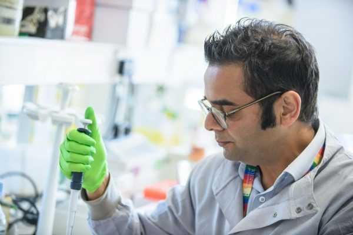

Vital Energy
Vital EnergyIngenieros
Nuestro equipo de ingenieros está compuesto por expertos en ingeniería civil y mecánica, con años de experiencia en la construcción de centrales nucleares. Además, contamos con una amplia red de proveedores y socios comerciales que nos ayudan a conseguir los mejores materiales y tecnologías para nuestros proyectos.
Construcción
Nuestro equipo de construcción se encarga de todas las etapas de la construcción de una central nuclear, desde el diseño y la planificación hasta la construcción y la puesta en marcha. Trabajan en colaboración con nuestros clientes y socios para garantizar que nuestros proyectos cumplan con los más altos estándares de seguridad y eficiencia.
Además, nuestro equipo de ingenieros también se encarga de la investigación y el desarrollo en tecnología nuclear. Estamos constantemente buscando formas de mejorar la seguridad y la eficiencia de nuestras centrales nucleares y trabajamos en colaboración con otras empresas y universidades en proyectos de investigación y desarrollo.
Investigación y desarrollo
Nuestro equipo de ingenieros también se encarga de la investigación y el desarrollo en tecnología nuclear. Estamos constantemente buscando formas de mejorar la seguridad y la eficiencia de nuestras centrales nucleares y trabajamos en colaboración con otras empresas y universidades en proyectos de investigación y desarrollo.
Marketing y comunicación
En Vital Energy contamos con un equipo de marketing y comunicación que se encarga de dar a conocer nuestros proyectos y soluciones energéticas a nuestros clientes y socios. Este equipo utiliza herramientas y técnicas de marketing para generar interés en nuestros productos y servicios, y trabaja en estrecha colaboración con el equipo de ingenieros y construcción para asegurarse de que nuestros mensajes y soluciones estén siempre en línea con las necesidades y expectativas de nuestros clientes.
Finanzas y recursos humanos
En Vital Energy contamos con un equipo de finanzas y recursos humanos que se encarga de la gestión del presupuesto y del personal de la empresa. Este equipo se asegura de que nuestros proyectos se desarrollen de manera eficiente y rentable, y también se encarga de la contratación, formación y desarrollo del personal de la empresa.